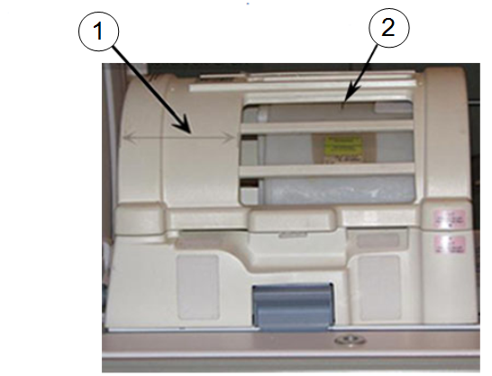
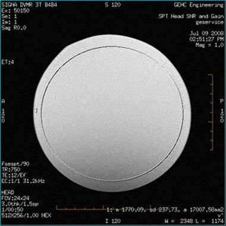

- 00000018WIA30E8CE20GYZ
- id_131058883.2
- Jul 13, 2021 6:21:52 PM
3.0T split-top head coil SNR test and troubleshooting
| Required persons | Preliminary requirements | Procedure | Finalization |
|---|---|---|---|
| 1 | Not Applicable | 15 minutes | Not Applicable |
| Item | Quantity | Effectivity | Part number | Manufacturer |
|---|---|---|---|---|
| Head TLT Sphere Phantom | 1 | - |
2359877 | - |
| Head TLT Loader | 1 | - | 2360031 | - |
Follow this process to prepare for the signal-to-noise ratio (SNR) test using the 3.0T Split-Top Head Coil, P/N 5182872. The split-top head coil can be used in one mode of operation with the coil name: HEAD. See Table 4 to understand the data required to calculate the individual element SNR.
All ROI measurements are made on the individual element images, not on the composite image. The image quality check uses two different protocols for signal and noise image acquisition.
-
The signal scan is a Fast Spin Echo (FSE) sequence used to minimize susceptibility and B0 inhomogeneity effects.
-
The noise scan is a Gradient Echo (GRE) sequence that has a control variable (do_noise) to eliminate the transmit RF completely during the scan.
The signal scan must be run before the noise scan because the R1, R2, and TG values from the signal scan are used for the noise scan.
Signal Scan
- From the scan desktop, start a new scan by selecting Create New Worklist.
- Type geservice for Patient ID and 111 for Patient Weight in pounds.
- Click Show All Protocols to open the protocols window.
- Remove any pads from the coil, and unlock and remove the top
half of the coil by depressing the latches on either side of the coil.
- Place the head phantom, loader shell, and phantom positioner pad into the head coil.
- Set the phantom into the coil, and reattach the top half of the coil.
- At the magnet, press the Alignment Light button, and align the laser crosshair with the loader shell crossmark.
Press Landmark to landmark the alignment.
Figure 1. Aligning Laser Crosshair with Shell Crossmark 
Item Description 1 Confirm that the wider portion of the coil is at the back, towards the MR system. 2 Loader shell cross mark. - Move the coil to the scan position by pressing Move to Scan, while ensuring the cables do not get snagged.
- At the console, set the protocols per the Signal section in Table 3. (On 3.0T systems, GE service personnel can use the Head SNR Signal protocol in the GE/Other protocol folder.)
- Click Save Rx to download the protocols, then click Prepare to Scan.
- Run Auto Prescan, and record the R1, R2, and TG values. (R1 should equal 11 and R2 should equal 14.)
- If values are not correct, run Manual Prescan and adjust the R1 and R2 values. Click Done when complete.
- Click Scan.
Noise Scan
A signal scan must be run before the noise scan because the same R1, R2, and TG values must be used for both the signal and noise scans. Do not run an Auto Prescan before the noise scan because the values will be changed.
- Copy the signal scan series. Right-click Signal Series and select Copy Series. Click Paste Series in the Rx Manager.
On 3.0T systems, GE service personnel can use the Head SNR Noise protocol in the GE/Other protocol folder.
- Click View Edit and set the protocols per the Noise section from Table 3.
- Click Save Series and Prepare to Scan.
- Open the Display CVs menu under Research Options. Set the rhformat and do_noise CVs to 1.
- Run Manual Prescan, but do not make any changes. Click Done.
- Click Scan.
Table 3. Signal and Noise Protocols Protocol Signal Noise Patient Exam Information Patient ID geservice geservice Patient Name HEAD HEAD Patient Weight 111 lb (50 kg) 111 lb (50 kg) Patient Position Patient Position Supine Supine Patient Entry Head First Head First Coil HEAD HEAD Series Description Signal Noise Imaging Parameters Plane Sagittal Sagittal Mode 2D 2D Pulse Seq FSE-XL Gradient Echo Imaging Options None None PSD Name Leave blank Leave blank Scan Timing # of Echoes 1 1 TE 17 Min Full TR 750 50 Echo Train Length 4 N/A Bandwidth 31.25 31.25 Additional Parameters Flip Angle N/A 1 Acquisition Timing Freq 512 512 Phase 256 256 NEX 1 1 Phase FOV 1 1 Freq DIR A/P A/P Shim Auto Auto Phase Correct On N/A Contrast Off Off Scanning Range FOV 24 24 Slice Thickness 3 3 Spacing 1.5 1.5 Start R/L 0 0 P/A Center 0 0 I/S Center 0 0 End R/L 0 0 Slices 1 1 Table Delta 0 0
SNR Image Analysis
Use a circular region of interest (ROI).
- Select ROI as 80% of the phantom image for the signal scan. For the noise scan, choose 100% of the rectangular ROI.
- ROIs in both signal and noise images can be measured directly
in the image browser:
- Select MEASURE .
- Select the rectangular shape, and adjust its size and orientation so that the ROI is similar to the examples in Figure 2 and .Figure 3.
Note:The ROI displays in the lower right corner of the image along with the Mean, Standard Deviation, and Area of ROI.
Figure 2. Noise ROI Measurement 
Figure 3. Signal ROI Measurement 
- Record the values for mean signal, mean noise, and SNR in the
data sheet below.
Table 4. SNR Data Sheet Date Mean Signal Mean Noise SNR - Individual receiver SNR is defined as the mean of data within
the signal ROI divided by the mean of data within the noise ROI (with
a correction factor).
 Note:
Note:The SNR calculation uses the MEAN of the signal image and MEAN of the noise image.
SNR Specification
The SNR measurements must be greater than or equal to the SNR specification of 21.8 for the 3.0T split-top head coil.
External Cable Check
No cable continuity check is recommended for the connector because of pin damage concerns.
Mechanical Hardware Check
- Check the P connector for mechanical damage such as cracks.
- Inspect the contact pins in the P connector for damage from improper insertion or corrosion.
- Make sure the cradle latches and top latches are operating and have adequate range of motion.
- Confirm that the coil P-connector T-handle spindle is properly lubricated and not worn. (Worn spindles contribute to a loose mechanical connection, intermittent MC bias faults, and in extreme situations, poor SNR.) Replace worn spindles per ODU Connectors Cleaning and Replacement.
Troubleshooting
If unable to prescan, or scanning but receiving no signal:
- Check that the top half of the coil is latched properly to the bottom half of the coil.
- Confirm that the landmark is correct and the cradle did not unlatch.
- Verify that the scan locations and any FOV offsets are correct.
- Try scanning again.
Note:
Be sure to remove the head coil from the magnet bore before scanning with the body coil.
If still unable to receive signal, try to scan (transmit and receive) with the body coil.
If scanning is happening, the problem is with the coil. Follow the guidelines in 3.
- If the SNR fails for the coil with a normal signal and noise
too high, or with signal too small, order the preamp and replace it.
Refer to 3.0T Split-Top Head Coil FRUs and Replacement for replacement instructions for the TR board or preamp.
- (For Rev 12 coil onwards) If the coil is not scanning with a TR Bias Fault failure, the problem is with the interface QHTR assembly. Replace the QHTR I/F Cable Assembly (P/N 5437386).
- (For Rev 1 through Rev
11 Coil) If the coil is not scanning with a TR bias fault
failure, the problem is with either the TR board or the preamp.
If one or all PIN diodes (D1, D2, D3, D4, D5) shows a short, order the TR board (P/N 5366299) for replacement.
If all PIN diodes are good (in both forward and reverse bias), order only the preamplifier (P/N 5433509).
Finalization
No finalization steps.